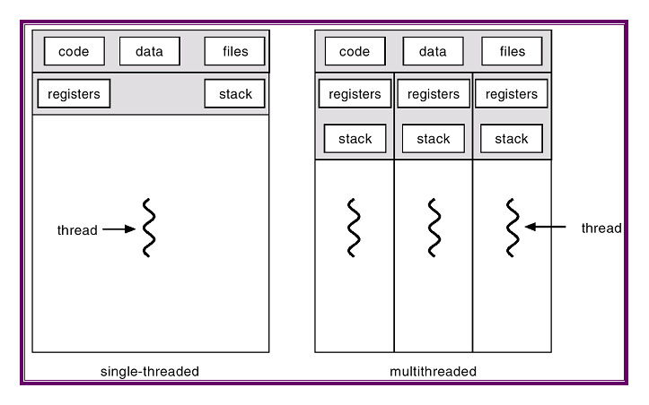

We are entering an era of multiprocessor or multicore programming, where each computer is equipped with multiple processors each of which in turn might have multiple cores. To fully exploit the capability and computation potentials of such modern machines, we need a new discipline of concurrent programming. In this discipline, different computation tasks execute on different cores simultaneously, which might improve overall efficiency of the execution significantly. Yet despite its benefit of efficiency, concurrent programming remains difficult, not only for the new programming idioms it requires, but also for the complicated interactions between execution tasks it leads to.
In this lab, you will learn how to perform concurrent programming. First, you will learn how to program with the basic abstraction of concurrent programming --- threads. Second, you will learn race conditions, one of the most subtle bugs of concurrent programming, and learn how to coordinate different threads to avoid race conditions with synchronization primitives including mutex, spinlocks, and conditional variables. Third, you will learn the concept of atomic variables, and learn how to use them to build synchronization primitives. Finally, you will learn how to build and use concurrent objects, that is, data structures supporting concurrent accesses. Finally, you will implement lock-free concurrent data structures, that is, data structures without using explicit locks.
You should download this code to start with this lab.
When you finished the lab, zip you code files with file name ID-lab-4.zip (e.g., SA19225789-lab-4.zip), and submit it to Online Teaching Platform. The deadline is 23:59 of Nov. 7th, 2023 (Beijing time). Any late submission will NOT be accepted.
Historically, one computer has just one processor, which is often called a uni-processor machine. On such machines, computation tasks (normally processes) are multiplex on this single processor by task switching. While this programming paradigm gives us the illusion that these tasks runs concurrently, they are indeed running sequentially.
Today's computers are mostly multicore machines. To program such computers, we might continue to use the multiprocess programming model, with one process running on one core. Unfortunately, while this model is possible, it has some disadvantages which makes it unideal. First, process is a relatively heavy abstraction with complicated semantics as well as high task switching costs. Furthermore, it is cumbersome to communicate between processes. The synchronization or communication mechanisms are either limited (e.g., pipes can only be used parent-children) or heavy-weighted (e.g., sockets will normally crawl through the whole network stacks).
A thread is a new model to run multiple tasks simultaneously on multi-cores. Unlike processes, threads are lightweight in nature, hence it is cheap to create. Furthermore, threads in a same process share the same address space, hence the (global) data as well as program code can be shared directly between all threads, leading to a much simpler and cheaper communication model.
The Posix thread specification supports the following functions, among others:
#include <pthread.h>
int pthread_create(pthread_t *thd, const pthread_attr_t *attr,
void *(*start)(void *), void *arg);
void pthread_exit(void *arg);
int pthread_join(pthread_t thd, void **ptr);
int pthread_detach(pthread_t thread);
pthread_t pthread_self(void);
These functions manage the whole life cycle of a thread:
Read the code in the directory partA, and finish the following exercises:
Race conditions arise in multithreaded environments when multiple threads access or modify shared data structures simultaneously, with proper synchronizations. Race conditions will lead to not only incorrect results but also undefined behaviors. Hence, to prevent race conditions, proper synchronization mechanisms must be utilized.
A race condition happens when two or more threads or processes access shared data simultaneously, and at least one of the thread modifies the data structure.
To prevent race conditions, we should utilize synchronization mechanisms. Common synchronization mechanisms include mutexes, semaphores, spinlocks, and conditional variables, among others. Mutex is a basic synchronization mechanism in concurrent programming, to enforce exclusive access to resources.
The pthread library mainly provides the following key functions to implement mutex operations:
#include <pthread.h>
int pthread_mutex_init(pthread_mutex_t *mutex, const pthread_mutexattr_t *attr);
int pthread_mutex_lock(pthread_mutex_t *mutex);
int pthread_mutex_unlock(pthread_mutex_t *mutex);
int pthread_mutex_trylock(pthread_mutex_t *mutex);
int pthread_mutex_destroy(pthread_mutex_t *mutex);
Among them, the pthread_mutex_init function is used to initialize the mutex. You can choose to pass in specific attributes or use default attributes. When a thread wishes to access a resource or code segment protected by a mutex, it should call pthread_mutex_lock to try to acquire the mutex. If the mutex is already held by another thread, the thread will be blocked until the mutex is released.
SpinLock is another synchronization mechanism guaranteeing exclusive execution. Unlike mutexes, when a thread tries to acquire an already occupied spin lock, it will spin to check the availability of the lock. Spin locks might provide higher efficiency when contention is not serious, due to the fact that it avoids the overhead of thread context switching. But in high contention scenarios, it may also lead to a waste of CPU resources.
In the pthread library, the operation of spin lock mainly involves the following key functions.
#include <pthread.h>
int pthread_spin_init(pthread_spinlock_t *lock, int pshared);
int pthread_spin_lock(pthread_spinlock_t *lock);
int pthread_spin_unlock (pthread_spinlock_t *lock);
int pthread_spin_trylock (pthread_spinlock_t *lock);
int pthread_spin_destroy(pthread_spinlock_t *lock);
Among them, the pthread_spin_init function is used to initialize a spin lock, accepting a lock pointer and a flag to determine whether the lock should be shared between processes. To acquire a spin lock, a thread uses the pthread_spin_lock function. If the lock is already held by another thread, it will keep trying to acquire it until it succeeds.
css-lab@tiger:~$ time
A conditional variable is a synchronization mechanism used for thread communication, which avoids busy-waiting.
In the pthread library, the operation of condition variables mainly involves the following key functions.
#include <pthread.h>
int pthread_cond_init(pthread_cond_t *cond, const pthread_condattr_t *attr);
int pthread_cond_wait(pthread_cond_t *cond, pthread_mutex_t *mutex);
int pthread_cond_signal(pthread_cond_t *cond);
int pthread_cond_broadcast(pthread_cond_t *cond);
int pthread_cond_destroy(pthread_cond_t *cond);
Among them, the pthread_cond_init function initializes the condition variable cond based on the provided attribute attr (or the default attribute). When a thread needs to wait for a certain condition cond to become true, it will call the pthread_cond_wait function and sleep on the condition variable cond.
Using conditional variables along with mutex, we can solve the multi-producer multi-consumer problem more elegantly, in which multiple producers put data items into a shared buffer, whereas multiple consumers get data items out of that buffer simultaneously.
Atomic variables are variables that are designed to be manipulated in an atomic, or indivisible, manner. This means that operations on these variables are guaranteed to be completed without interference from other threads. Atomic operations are essential in multithreaded applications where shared data can be accessed by multiple threads simultaneously. The <stdatomic.h> header file provides a set of functions that can be used to perform atomic operations on variables. These include:
Atomic variables can be used to build synchronization primitives such as mutexes, semaphores, and spinlocks.
You may wonder how do the high-level atomic variables (like the ones in the header file stdatomic.h) are implemented. In fact, these atomic variables are implemented by using atomic instructions on the low-level CPUs, and thus machine-dependent. In this part, we will investigate atomic variable implementations with respect to the Intel x86-64 CPUs, whereas the key rationals also apply to other CPUs like ARM.
Intel CPUs provide atomic instructions, by prefixing instructions with a special key word lock. For example, the instruction
lock incq (%rax)
will increment the value in the memory address pointed by the register %rax by 1, atomically. Under the hood, the CPU will lock the memory bus to guarantee exclusive access to memory. Specially, there is a special instruction CMPXCHG which will compare and exchange memory values atomically. Essentially, the CMPXCHG instruction is Intel's implementation of famous CAS instructions, which are widely available on diverse CPUs besides x86.
Concurrent data structures supports simultaneously accesses and modifications by multiple concurrent threads. In this part, we will build, as illustrating examples, two concurrent data structures: concurrent stacks and concurrent hash tables.
A concurrent stack, like sequential stack, supports typical stack operations such as push(), pop(), and size(), but in a concurrent manner.
Concurrent hash tables are data structures supporting efficient key searching, in concurrent scenarios.
Lock-free data structures protect concurrent operations on shared data without using explicit locks.
While various locks (e.g., mutex or spinlock) can guarantee thread safety on shared data structures, they also have effect to serialize operations which are often undesirable. Lockless data structures might improve the whole throughput further by using atomic operations without using explicit locks. In this part, we will build two lock-free data structures: stacks and queues.
The key idea to build a lock-free stack is to compare and swap the stack top atomically.
To build a lock-free queues, we use two atomic variables to record the queue's tail and head, respectively. Then we use atomic operations to enqueue or dequeue items.
Happy hacking!